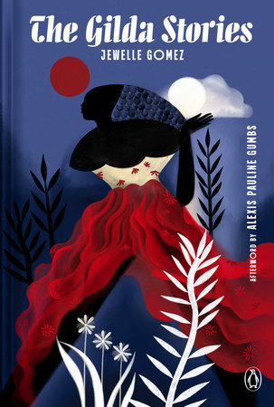
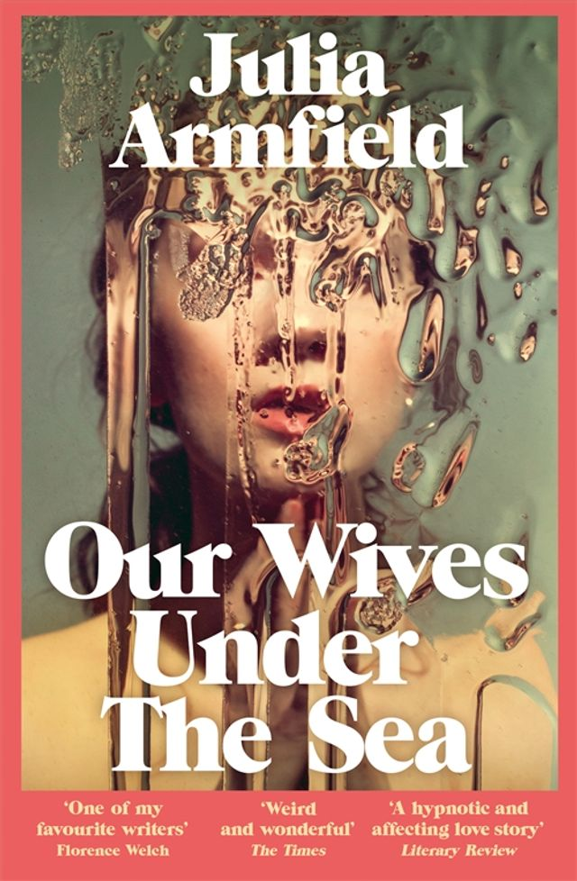
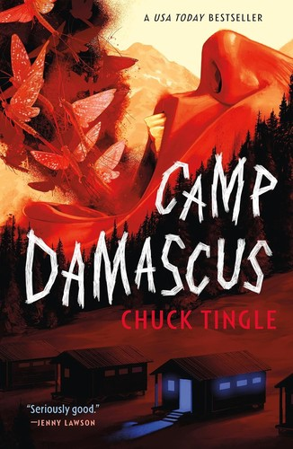
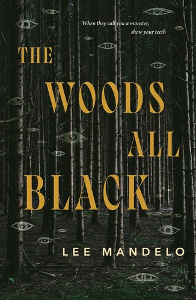

Pinboard post
Queer
Horror: Who Gets to Be the Monster?
A QBTL reading guide to queer horror, from vampire myth and underwater gothic to conversion-camp dread and trans historical horror.
Some horror asks what is hiding in the dark. Queer horror asks that too, then turns on the light and wonders why this person seemed frightening in the first place.
The answers might be supernatural, bodily, social or all three at once. For LGBTQ+ readers, horror’s old vocabulary of secrecy, transformation and otherness can land differently: sometimes as an echo of stigma, sometimes as a way to take control of it. And queer horror doesn’t have to turn every character into a symbol. It can be strange, funny, romantic, furious, tender, or simply an excellent story that makes you check the hallway before bed.
Here are four ways into the genre, each with a different kind of dark.
Start with a vampire story that makes room for a future

The Gilda Stories cover by Jewelle Gomez.
In The Gilda Stories, a young Black woman escapes slavery in 1850s Louisiana and becomes a vampire. Jewelle Gomez follows Gilda across centuries, using the vampire story to imagine Black lesbian life, love, chosen family and survival beyond the limits of the present. It’s a landmark work of speculative fiction, but it isn’t built around jump scares. Come for the reimagined vampire myth; stay for its expansive sense of history and possibility. [1]
For an underwater gothic about love and loss

Our Wives Under the Sea cover by Julia Armfield.
Julia Armfield’s Our Wives Under the Sea begins when Leah returns from a deep-sea mission that ended in catastrophe. Her wife, Miri, has her back, but something about Leah has changed. The result is an intimate, unsettling story about marriage, grief and the unknowable parts of the people we love. Its horror creeps in slowly, through the body and the everyday details of a relationship, rather than arriving with a neat explanation. [2]
For supernatural horror with a sharp edge

Camp Damascus cover by Chuck Tingle.
Camp Damascus by Chuck Tingle takes us to a small Montana town and the conversion camp on its mountain, which claims to be remarkably effective. The secret behind that claim is far darker. Tingle uses supernatural horror to confront the violence of conversion efforts, the cost of secrecy and the courage it takes to leave a harmful belief system. It’s a more direct, high-energy entry point if you want your horror to have teeth as well as something to say. [3]
For trans historical horror and bloody revenge

The Woods All Black cover by Lee Mandelo.
Lee Mandelo describes The Woods All Black as historical horror and trans romance, set in 1920s Appalachia. The novella brings prejudice, bodily autonomy and small-town religious power into a story of passion and revenge. It’s a strong choice if you want a darker, bloodier read, and one that puts a trans character at the centre of the story rather than at its margins. [4]
Who gets to name the monster?
These books don’t offer one tidy definition of queer horror. One reworks vampire mythology across centuries; another turns a marriage and an ocean into a source of dread; the others bring supernatural terror into direct contact with coercion, prejudice and bodily autonomy.
That variety is part of the pleasure. Horror gives us a place to sit with fears that can be hard to name, then ask where they came from. Is the danger coming from the creature, the institution, the family, the community, or the person telling the story? Who gets believed when someone says their body or their life has changed? And what might freedom look like after the frightening part?
If you’re new to the genre, choose by mood. Try Our Wives Under the Sea for atmospheric, slow-building unease; Camp Damascus for a sharper supernatural ride; The Gilda Stories for a sweeping vampire reimagining; or The Woods All Black for trans historical horror with a bloody streak.
The most interesting question may be less “What is the monster?” than “Who benefits when someone else gets called one?”